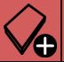
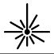
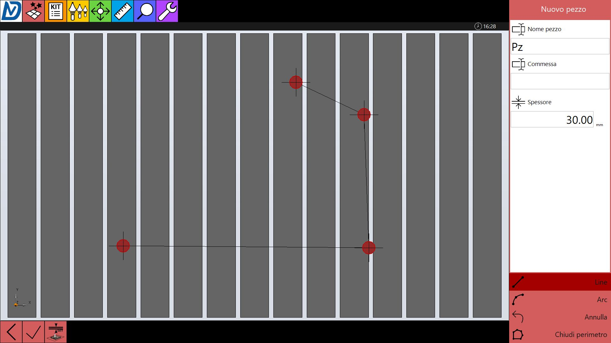
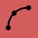
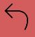
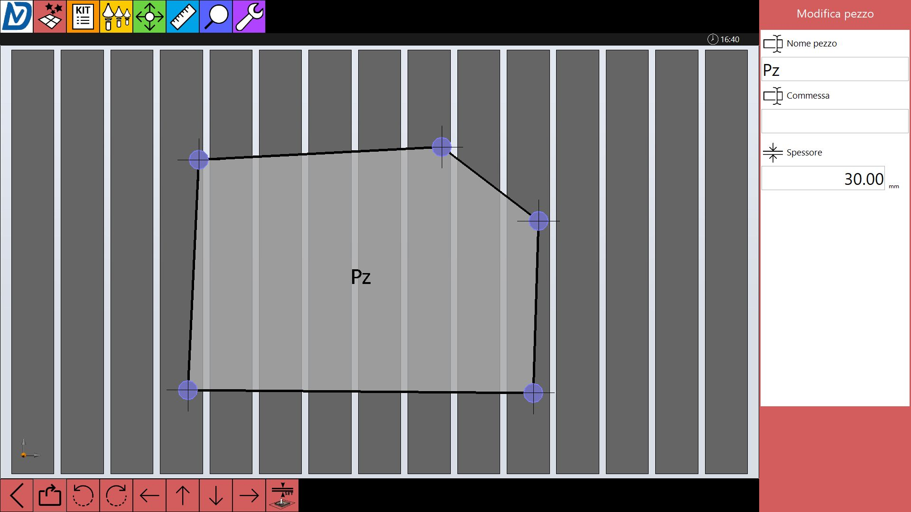
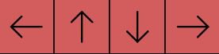

Le lavorazioni eseguibili dalla macchina vengono eseguite su pezzi disposti sul banco. Dopo aver caricato e fissato i pezzi è necessario definire le loro forme in modo che il software possa calcolare in modo corretto i percorsi da seguire per completare la lavorazione.
Crea pezzo non rettangolare Attiva la modalità per la creazione di un pezzo non rettangolare.

Crea pezzo rettangolare Attiva la modalità per la creazione di un pezzo rettangolare.
Importa DXF Importa un pezzo da file “.dxf”. Viene considerata solo la prima polilinea chiusa trovata e se confermata l’importazione, verrà posizionata nelle coordinate del dxf.
Cancella pezzo Cancella il pezzo selezionato.
Cancella tutti i pezzi Cancella tutti i pezzi presenti sull’area di lavoro.
Modifica pezzo Apre la modalità di modifica del pezzo selezionato.
Scatta foto (OPTIONAL) Dopo aver chiesto lo spessore scatta la foto dell’area di lavoro su cui poi si può creare il pezzo.
Rimuove foto (OPTIONAL) Elimina la foto dallo sfondo dell’area di lavoro.
Creazione nuovo pezzo
Il pezzo viene descritto mettendo insieme linee e archi creati in sequenza. La selezione del punto viene fatta direttamente sul monitor, utilizzando il punto di tocco o utilizzando il laser della macchina come riferimento. Con il laser acceso nella parte alta del monitor appare un pulsante che viene descritto qui sotto.

Una croce Legata alla posizione del laser della macchina, appare sul monitor. Ogni tocco sul monitor corrisponde al tocco in corrispondenza della croce. Premendo il pulsante si cambia modalità e il riferimento diventerà il centroutensile.
Un cerchio di colore verde Legato alla posizione e al diametro dell’utensile montato in macchina, appare sul monitor. Ogni tocco sul monitor corrisponde al tocco in corrispondenza del centro del cerchio. Premendo il pulsante si cambia modalità e il riferimento diventerà il laser a croce.
Un pezzo è caratterizzato da Nome, commessa e spessore, modificabili nella parte destra della pagina. Il nome e la commessa verranno poi visualizzati all’interno della forma del pezzo.

Comando linea attivo Attivo di default al primo avvio. Al tocco sul monitor corrisponderà la creazione di una linea dal punto finale dell’entità precedente al punto premuto.

Comando arco attivo Necessità del tocco due volte per poter definire l’arco passante per tre punti in cui il primo è il punto finale dell’entità precedente, e secondo e terzo sono nell’ordine quelli premuti durante il disegno.

Annulla Cancella l’ultimo elemento disegnato.
Chiudi perimetro Collega l’ultimo punto della figura con il primo.
Rileva spessore Imposta lo spessore del pezzo calcolandolo come differenza fra la punta dell’utensile montato e la quota banco.
Chiudi forma Effettua la chiusura della forma se ancora aperta. Conferma tutti i dati del pezzo e torna alla schermata precedente.
Nuovo pezzo rettangolare
Nella parte destra è possibile impostare i dati del pezzo e le dimensioni del rettangolo. Il tocco sul monitor sposta il rettangolo sul punto premuto con riferimento il vertice in basso a sinistra (contraddistinto da un cerchio rosso).
Modifica pezzo
Il pezzo può sempre essere modificato in forma, posizione, nome e spessore. Le modifiche ai dati vengono prese alla chiusura della finestra.

Durante la fase di modifica pezzo i vertici che descrivono il perimetro sono selezionabili e spostabili direttamente dal monitor tenendo premuto il punto durante lo spostamento.
Premendo all’interno del pezzo si effettua lo spostamento di tutta la figura, premendo esternamente al pezzo si effettua la rotazione dello stesso. I comandi sotto invece modificano l’intera figura
Rotazione adagiata Portare prima un vertice nella posizione corretta e poi eseguire la procedura:
Selezionare il vertice su cui ruotare
Selezionare il lato di riferimento
Selezionare un punto su cui portare il lato
Attendere la rotazione
Rotazione oraria o antioraria del pezzo Il centro di rotazione è il centro del pezzo. La rotazione è di 0.5_.

Muovi pezzo Spostamento del pezzo di 2 mm ad ogni pressione del pulsante secondo la direzione indicata dalla freccia.
Rileva spessore Imposta lo spessore del pezzo calcolandolo come differenza fra la punta dell’utensile montato e la quota banco.